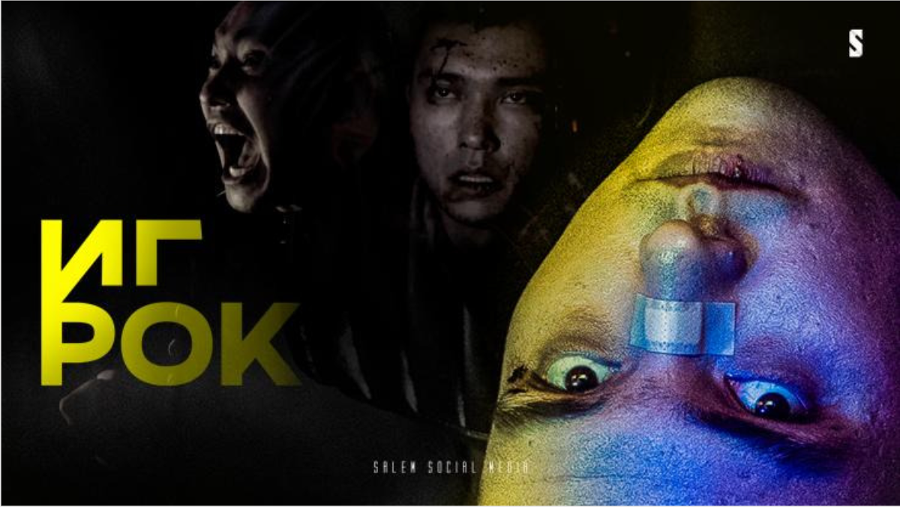
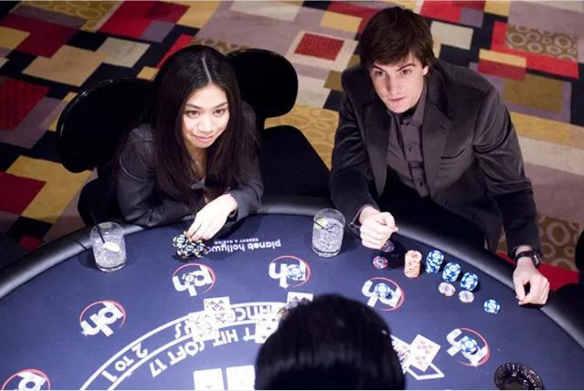
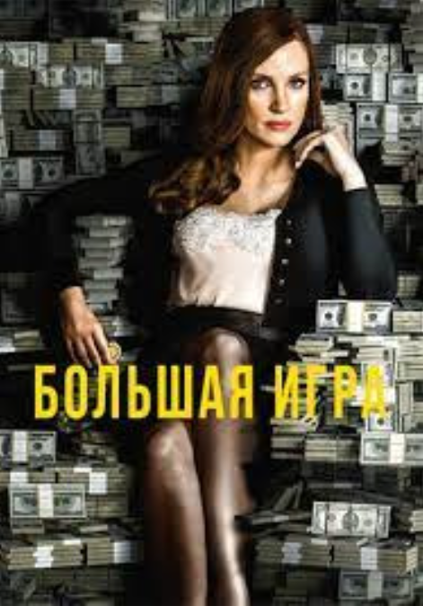
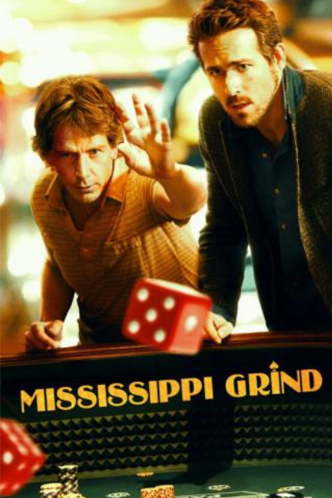
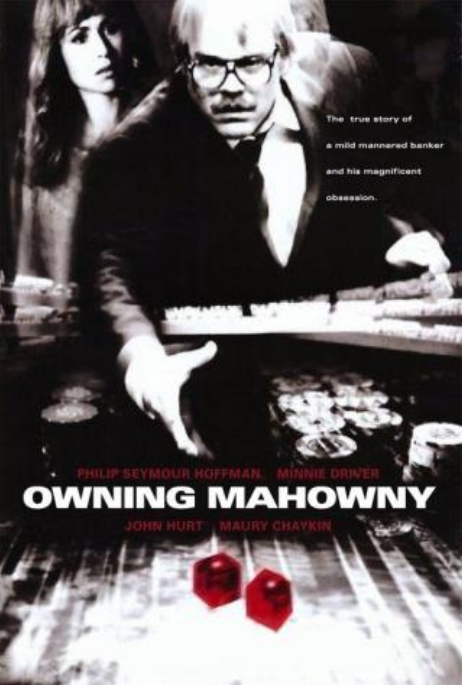

Құмар ойынға тәуелді ойыншы адамдар туралы және сол тәуелділіктің салдары жайлы
сериалдар
мен
кинофильмдер топтамасы ды сонымен бірге, шынайы өмірдегі жағдайдар кино өнер арқылы
бейнеленіп,
кей кездері көрерменнің саналарына ой дәнің егіп, қиналған адамдарға да бір демеу мен
үміт
беретін сәттері де баршылық.
⠀"Игрок", яғни отандық "ойыншы" сериалы құмар ойын арқылы жеңіл табыс табу амалы деп
таныған Данияр есімді жігіт жайлы. Бұл сериалдың өзінен біз қазіргі кезде құмар ойынның
артнынан еріп, қаржылық та, рухани тығырыққа тіреліп жүрген көптеген отандастарымызды
көре аламыз және сонымен бірге сериалды көргеннен кейін, дұрыс таңдау жасауға болатының
түсінуге болады.


⠀"Двадцать одно" - бұл америкалық фильм шынайы оқиға желісімен түсірілген. Болашағы
жарқын, интеллекті жоғары және таланатты студент Бен Гарвард университетіне түсіп, оқуы
үшін қаражатты жинау жолдарын қарастыру барысында, білікті профессор Микки Роса мырзамен
таныстығы үлкен алаяқтық іспен ұштасып, тәуекелділік пен ойын құмарлығының зардабын да
сезетін болады
"2017 жылы түсірілген "Большая игра" кинофильмі АҚШ-та "покер ханшайымы" атанған Молли
Блумның Голливудта ең ірі заңсыз жасырын казино ұйымдастырушысы болып ғана қоймай,
сонымен бірге ойын бизнесін коммерциялық бағытын дамыту бойынша да пайдаға кеңелгенімен,
заң алдында құқықтық жауаптылық бар екендігін еске алдырды. Тәтті пайданың, ащы дәмі.


"Прогулка по Миссисипи" - құмар ойын тәуелділігінен отбасынан да, тұрақты табысынан да
айырылған Джерри карта ойнауын жалғастыра береді және сондай бір сәтте Кёртис есімді
ойыншымен танысып, оның ойынға деген құштарлығы мен сәттілігіне тәнті болып, құмар
ойынға деген сенімі одан сайын күшейе түсіп, мүмкіндікті жіберіп алмас үшін, одан әрі
орға құлай түседі.
"Дэн Махоуни қарапайым қатардағы банк қызметкері, бірақ оның жасырғаны бар - ол құмар
ойнына тәуелді ойыншы. Жұмыстан соң бар қаражатын казино ойнына жұмсайтын Дэн мырза ақыр
аяғында қарызға батып, өзінің қызметтік міндетін теріс пайдаланып, одан әрі басын
қауіпке төндіре бастайды. "Одержимость" - нағыз құмар ойнының құрбандарын таза
бейнелейтін кинотуынды болып келеді. Психологиялық тұрғыдан адамның өз құмарлығын
бағындыра алмауы салдарынан өмірін құрдымға жіберуі бір сәт екендігін ұғындырғандай.
